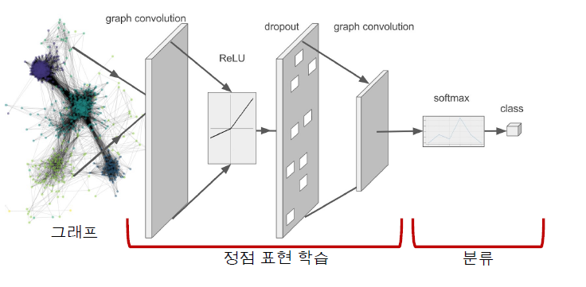
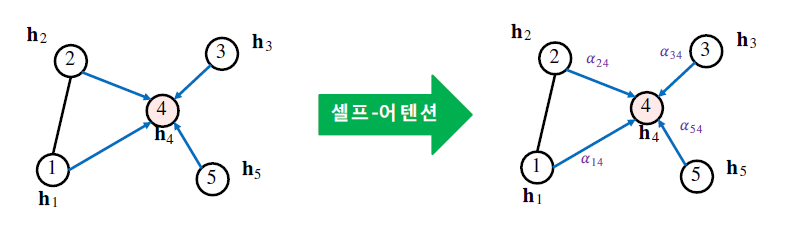

[GNN] Graph Basic
ref
https://kijungs.github.io/
1. 정점 표현 학습
- 그래프의 정점(Node)를 벡터의 형태로 표현으로 정점 임베딩(Node Embedding)이라고도 부른다.
입력: 그래프
출력: 정점 u에 대한 임베딩, 즉 벡터 표현 \(z_u\)가 출력
그래프에서 정점간 유사도를 임베딩 공간에서도 보존하는 것을 목표로 함
- 유사도
- 인접성/거리/경로/중첩/임의보행 기반 접근법
\[similarity(u,v) \approx z_v^Tz_u\]
- 변환식(Transductive) 방법
학습의 결과로 정점의 임베딩 자체를 얻는다.
한계1: 학습이 진행된 이후에 추가된 정점에 대해서 임베딩을 얻을 수 없다.
한계2: 모든 정점에 대한 임베딩을 미리 계산해 저장해 두어야 한다.
한계3: 정점이 속성(Attribute) 정보를 가진 경우에 활용이 어렵다.
- 귀납식(Inductive) 방법
- 정점을 임베딩으로 변환시키는 함수 \(\to\) 인코더를 얻는다.
\[ENC(v) = z_v\]
장점1: 학습이 진행된 이후에 추가된 정점에 대해서 임베딩을 얻을 수 있다.
장점2: 모든 정점에 대한 임베딩을 미리 계산해 저장해 둘 필요가 없다
장점3: 정점이 속성(Attribute) 정보를 가진 경우에 활용할 수 있다.
GNN: 대표적인 귀납식 임베딩 방법
2. 그래프 신경망
구조
이웃 정점들의 정보를 집계하는 과정을 반복하여 임베딩을 얻는다.
층(Layer)마다 임베딩을 얻는다.
각 층에서는 이웃들의 이전 층 임베딩을 집계하여 새로운 임베딩을 얻는다.
- 집계 함수
이웃들 정보의 평균 계산
신경망에 적용
\[h_v^0 = x_v\]
\[h_v^k = \sigma \left( W_k \sum_{u \in N(v)} \frac{h_u^{k-1}}{|N(v)|} + B_kh_v^{k-1} \right), \forall k >0\]
\(h_v^0 = x_v\): 0번 층에서 정점 v의 임베딩으로 정점 v의 속성 벡터로 초기화
\(h_v^k\): 현재 층, 즉 k번 층에서 정점 v의 임베딩
\(\sigma\): 비선형 함수(ReLU, tanh 등)
\(\sum_{u \in N(v)} \frac{h_u^{k-1}}{|N(v)|}\): 이전 층에서 이웃들의 임베딩에 대한 평균 계산
\(h_v^{k-1}\): 이전 층에서 정점 v의 임베딩
- 마지막 층에서 정점 별 임베딩이 해당 정점의 출력 임베딩
- 한계: 이웃들의 정보를 동일한 가중치로 평균을 낸다.
학습
- 학습 변수(Trainable Parameter)는 층 별 신경망의 가중치
- \(W_k, B_k\): 학습 변수
- 손실함수 결정: 정점간 거리 보존하는 것 목표
인접성 기반 유사도 정의 \(\to\) 손실 함수
\[{\cal L} = \sum_{(u,v) \in V \times V} ||z_u^Tz_v - A_{u,v}||^2\]
\(\cal L\): 비용함수
\(\sum_{(u,v) \in V \times V}\):모든 정점 쌍에 대하여 합산
\(z_u^Tz_v\): 임베딩 공간에서의 유사도
\(A\): 그래프에서의 유사도
- 위의 내용은 분류를 하기 위한 전 단계이며, 분류(Classfier)를 하기 위한 손실함수는 따로 있음.
\(\to\) 후속 과제(Downstream Task)의 손실함수를 이용한 종단종(End-to-End) 학습도 가능
분류기의 손실함수, 예를 들어 교차 엔트로피(Cross-Entropy)를, 전체 프로세스의 손실함수로 사용하여 종단종 학습을 할 수 있다.
\[{\cal L} = \sum_{v \in V} y_v log(\sigma(z_v^T \theta)) + (1-y_v)log(1-\sigma(z_v^T \theta))\]
\(y_v\): 정점의 실제 유형(0 혹은 1)
\(z_v^T\): 정점의 임베딩
\(\theta\): 분류기의 학습 변수

변환적 정점 임베딩 이후에 별도의 분류기를 학습하는 것보다 정확도가 대체로 높다.
학습에 사용할 대상 정점을 결정하여 학습 데이터를 구성한다.
오차역전파(Backpropagation)을 통해 손실함수를 최소화한다. 신경망의 학습 변수를 학습한다.
학습된 신경망을 적용해, 학습에 사용되지 않은 정점의 임베딩을 얻는다.
활용
- 학습 이후에 추가된 정점의 임베딩을 얻는다.
EX) 온라인 소셜네트워크 등 실제 그래프들은 시간에 따라서 변화한다.
- 학습된 그래프 신경망을, 새로운 그래프에 적용한다.
3. 그래프 신경망 변형
그래프 합성곱 신경망
- 집계함수
\[h_v^0 = x_v\]
\[h_b^k = \sigma \left( W_k \sum_{u \in N(v) \cup v} \frac{h_u^{k-1}}{\sqrt{|N(u)||N(v)|}} \right), \forall k \in \{1, \dots, K \}\]
\[z_v = h_v^K\]
- 기존 집계 함수와 비교 했을 때 정규화 방법이 변화되었고, 동일 신경망 사용으로 학습 변수를 공유한다.
- 한계: 단순히 연결성을 고려한 가중치로 평균을 낸다.
GraphSAGE
- 집계함수
- 이웃들의 임베딩 AGG 함수를 이용해 합치고 자신의 임베딩과 연결(Concatenation)
\[h_v^k = \sigma([W_k \cdot \text{AGG} (\{h_u^{k-1}, \forall u \in N(v)\}), B_kh_v^{k-1}])\]
- AGG 함수
MEAN: AGG = \(\sum_{u \in N(v)} \frac{h_u^{k-1}}{|N(v)|}\)
Pool: AGG = \(\gamma(\{\text{Q}h_u^{k-1}, \forall u \in N(v)\})\)
\(\gamma\): 원소별 최대
- LSTM: AGG = \(\text{LSTM}([h_u^{k-1}, \forall u \in \pi(N(v))])\)
4. 합성곱 신경망과의 비교
- 합성곱 신경망과 그래프 신경망의 유사성
모두 이웃의 정보를 집계하는 과정 반복
GCN은 이웃 픽셀의 정보를 집계하는 과정 반복
- 합성곱 신경망과 그래프 신경망의 차이
- GCN은 이웃의 수가 균일하지만 그래프 신경망은 정점 별로 집계하는 이웃의 수가 다르다.
- 그래프에는 합성곱 신경망이 아닌 그래프 신경망을 적용해야 한다.
합성곱 신경망이 주로 쓰이는 이미지는 인접 픽셀이 유용한 정보를 담고 있을 가능성이 높다.
그래프의 인접 행렬에서의 인접 원소는 제한된 정보를 가지며 인접 행렬의 행, 열의 순서는 임의로 결정되는 경우가 많다.
5. 그래프 어텐션 신경망
Graph Attention Networ, GAT: 가중치 자체도 학습
실제 그래프에서 이웃 별로 미치는 영향이 다를 수 있기 때문에 가중치를 학습하기 위해서 셀프-어텐션(Self-Attention) 사용

- 각 층에서 정점 \(i\)로부터 이웃 \(j\)로의 가중치 \(a_{ij}\) 계산법
1 해당 층의 정점 \(i\)의 임베딩 \(h_k\)에 신경망 \(W\)를 곱해 새로운 임베딩을 얻는다.
\(\tilde h_i = h_i W\)
2 정점 \(i\)와 \(j\)의 새로운 임베딩을 연결한 후, 어텐션 계수 \(a\)를 내적한다. \(a\)는 모든 정점이 공유하는 학습 변수이다.
\(e_{ij} = a^T [\text{CONCAT}(\tilde h_i, \tilde h_j)]\)
3 2의 결과에 소프트맥스를 적용한다.
\(a_{ij} = \text{softmax}_j(e_{ij}) = \frac{\text{exp}(e_{ij})}{\sum_{K \in N_i} \text{exp}(e_{iK})}\)
여러 개의 어텐션을 동시에 학습한 뒤, 결과를 연결하여 사용 \(\to\) 멀티헤드 어텐션(Multi-head Attention)
\[h_i' = \text{CONCAT}_{1 \leq k \leq K} \sigma \left( \sum_{j \in N_i} a_{ij}^k h_j W_k \right)\]
- 어텐션의 결과 정점 분류의 정확도가 향상
6. 그래프 표현 학습, 그래프 임베딩, 획일화 문제
- 표현 학습, 임베딩
그래프 전체를 벡터의 형태로 표현
그래프 임베딩은 벡터의 형태로 표현된 그래프 자체를 의미하기도 하며 그래프 분류 등에 활용
그래프 풀링(Graph Pooling): 정점 임베딩들로부터 그래프 임베딩을 얻는 과정
- 지나친 획일화
지나친 획일화(Over-smoothing) 문제: 그래프 신경망의 층의 수가 증가하면서 정점으 ㅣ임베딩이 서로 유사해지는 현상으로 적은 수의 층으로도 다수의 정점에 의해 영향을 받는다.
그래프 신경망의 층의 수를 늘렸을 때 후속 과제에서 정확도가 감소하는 현상 발견
대응: JK네트워크(Jumping Knowledge Network)는 마지막 층의 임메딩+모든 층의 임베딩 함께 사용